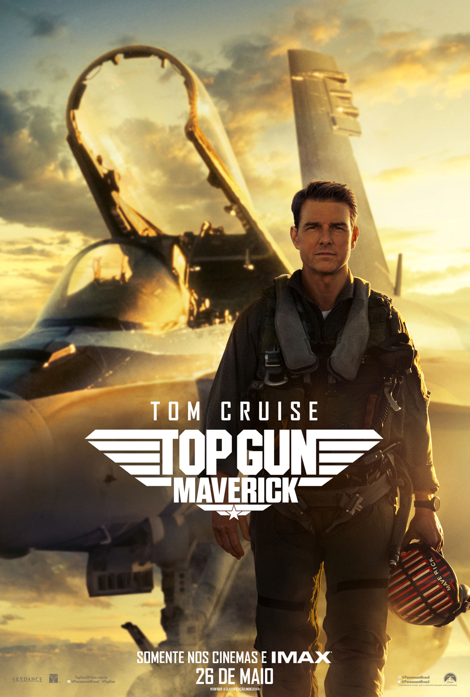
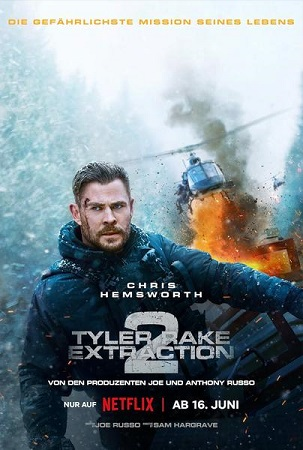

Homem Formiga e a Vespa: Quantumania

SINOPSE: Em Homem-Formiga e a Vespa: Quantumania, quando Cassie (Kathryn Newton), filha de Scott Lang (Paul Rudd), desenvolve um dispositivo que permitiria a comunicação com o reino quântico, o experimento termina em desastre: Cassie, Scott e sua companheira e heroína, Vespa, Hope van Dyne (Evangeline Lilly) involuntariamente se encontram no reino místico. Unindo forças com os pais de Hope, Hank Pym (Michael Douglas) e Janet van Dyne (Michelle Pfeiffer), o trio trabalha um caminho de volta enquanto os atrai para o misterioso mundo do Reino Quântico, onde encontram criaturas alienígenas e uma civilização oculta. Eles também descobrem que Janet, que ficou presa aqui por 30 anos, ainda esconde deles um ou dois segredos de seu passado: porque o misterioso Kang (Jonathan Majors), que tem a habilidade de passar, também está preso no quantum, a dimensão usada para viajar no tempo e no multiverso? E o mais importante: porque ele precisa da ajuda de Scott em uma missão importante? Será que o poderoso Kang pode ser confiável?
Top Gun: Maverick
SINOPSE: Depois de mais de 30 anos de serviço como um dos principais aviadores da Marinha, Pete "Maverick" Mitchell está de volta, rompendo os limites como um piloto de testes corajoso. No mundo contemporâneo das guerras tecnológicas, Maverick enfrenta drones e prova que o fator humano ainda é essencial.
Transformers: O Despertar das Feras

SINOPSE: Transformers: O Despertar das Feras traz mais uma aventura épica pelo universo dos Transformers. Ambientada nos anos 1990, o filme levará o público a uma aventura global cheia de ação, enquanto os Maximals, Predacons e Terrorcons se juntam à batalha entre os Autobots e Decepticons na Terra. Noah (Anthony Ramos), um jovem astuto do Brooklyn, e Elena (Dominique Fishback), uma ambiciosa e talentosa pesquisadora de artefatos, são arrastados para o conflito enquanto Optimus Prime e os Autobots enfrentam o terrível novo inimigo empenhado em sua destruição chamado Scourge. O filme é a sétima parcela da série de filmes Transformers, servindo como uma sequência autônoma de Bumblebee (2018) e prequela de 2007, Transformers - O Filme. Supostamente baseado no spinoff de Beast Wars: Transformers, que apresentava robôs que se transformam em animais robóticos. A série de animação para TV foi exibida no Brasil nos anos 1990, reinventando a saga dos Autobots e Decepticons.
Vingadores: Ultimato

SINOPSE: Em Vingadores: Ultimato, após Thanos eliminar metade das criaturas vivas em Vingadores: Guerra Infinita, os heróis precisam lidar com a dor da perda de amigos e seus entes queridos. Com Tony Stark (Robert Downey Jr.) vagando perdido no espaço sem água nem comida, o Capitão América/Steve Rogers (Chris Evans) e a Viúva Negra/Natasha Romanov (Scarlett Johansson) precisam liderar a resistência contra o titã louco.
Resgate 2
SINOPSE: Em Resgate 2, acompanhamos o retorno do mercenário australiano Tyler Rake (Chris Hemsworth), que sobreviveu por um triz aos eventos do primeiro filme, onde precisou viajar até Bangladesh, na índia, em uma difícil missão para salvar o filho de um poderoso chefão do narcotráfico. Agora, Rake deve encarar um desafio ainda mais perigoso e insano do que o anterior: resgatar a família de Zurab (Tornike Gogrichiani), um gângster impiedoso da Geórgia, e libertar a todos de uma prisão de segurança máxima na qual que estão sendo mantidos, contando com a ajuda dos irmãos mercenários Nik Khan (Golshifteh Farahani) e Yaz Khan (Adam Bessa). Além de acompanhar a mais nova missão de Tyler, a trama também mostra como o homem, que um dia já foi um honrado herói militar, se transformou em um mercenário do crime organizado. Com Idris Elba, Tornike Gogrichiani, Tinatin Dalakishvili, Daniel Bernhardt, Tako Tabatadze e Olga Kurylenko.